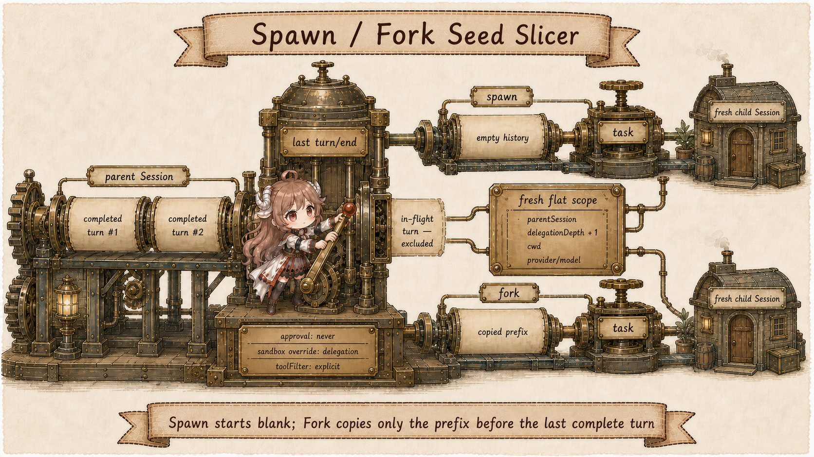
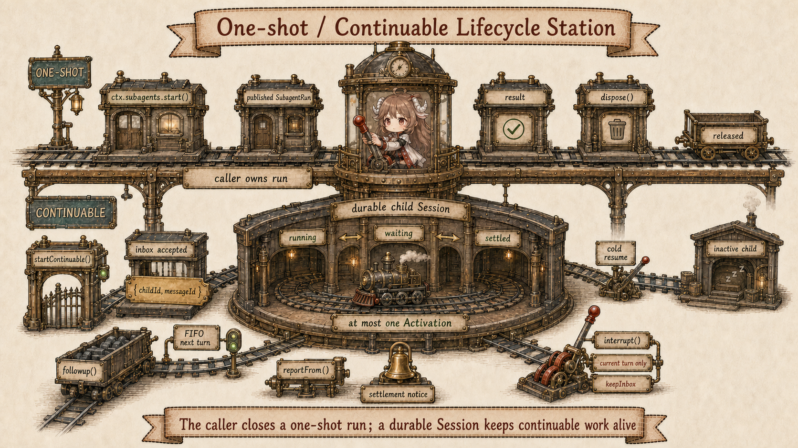
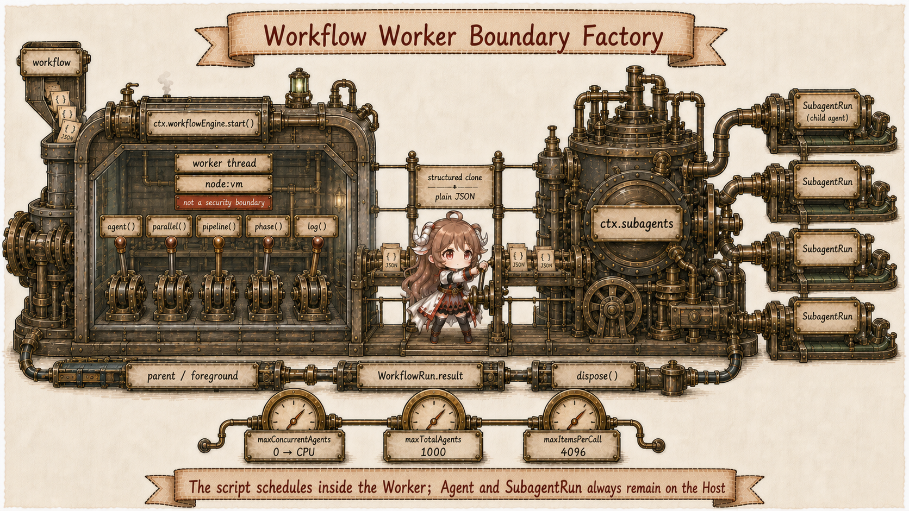
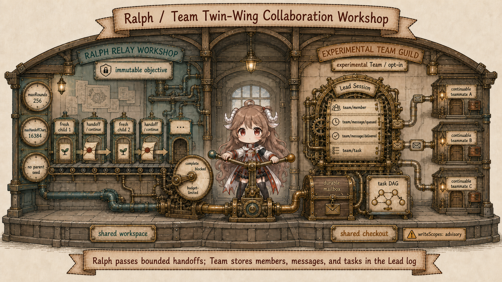

“Open several agents in parallel” sounds like one call option. It actually chooses at least six things: whether a child sees parent history; who owns cancellation and disposal; whether output returns synchronously, as a notice, or through durable mail; whether dialogue can continue; where concurrency and depth stop; and who coordinates concurrent workspace mutations.
DSH answers with multiple seams, not one enormous AgentManager. ctx.subagents unifies providers and child lifecycle. ctx.workflowEngine executes model-written orchestration. Ralph packages a fixed sequential policy as an ordinary tool. Experimental ctx.agentTeams layers durable roster, mailbox, and task DAG over continuable children.
Reading contract.After this chapter, you should be able to explain the sole history difference between spawn and fork; why fork stops at the last turn/end; who closes one-shot runs versus continuable Activations; why reportFrom() and settlement notice cannot merge; what workflow worker isolation provides and never provides; and why Ralph and Team are not merely serial and parallel versions of one feature.
Evidence boundary.This chapter is pinned to b150a55. Experimental Team lives under packages/experimental and requires explicit opt-in; it is not a stable base-bundle collaboration protocol. toolFilter and shared-cwd policy are not security boundaries either: external processes and Bash can bypass coordination.
1. One provider seam, several orchestration consumers
1.1 SubagentRuntime unifies start contracts, not implementations
The SubagentRuntime registers named providers. start(name, request) serves one-shot children; startContinuable(spec) establishes a continuable child; followup, interrupt, reportFrom, and list/drain operations act on durable session identity and direct-parent authority. Providers may run in-process, out-of-process, or over a future transport without changing consumer result contracts.
subagent and subagent_fork select a provider directly. workflow and ralph first create a WorkflowRun whose worker starts children through the same seam. Experimental Team uses continuable providers but owns identity, mailbox, and task coordination in its own domain.
1.2 Depth, policy, and capability freeze before child creation
Child headers retain parentSession and monotonic delegationDepth. tool-subagent defaults to maxDepth: 3; attempted child depth beyond the cap rejects before creation, and resume cannot lower a runtime option to impersonate a root. Providers advertise outputSchema, depthLimit, toolFilter, and persona capabilities so unsupported requests fail before a child appears.
In-process delegation pins approval to never. If the parent has an explicit sandbox override, the child logs it with source: delegation; the deployment default is not copied. That snapshot differs from optional toolFilter: filtering changes schema, lookup, and execution visibility, but is not an automatically inherited authority ceiling.
2. spawn and fork differ only by seed
2.1 Spawn starts empty; fork copies through the last completed turn

spawn passes no seed; the child sees only the standalone task. fork passes the parent's contiguous completed-turn prefix. The parent turn that calls the subagent is still open: its assistant tool call has neither result nor turn/end. Copying that raw tail would create an unbalanced child Session.
Fork therefore cuts at the newest turn/end. With no completed parent turn, it degenerates into fresh spawn. The seed is a one-time snapshot; later parent events do not stream into the child.
2.2 History inheritance is not scope or authority inheritance
Both paths share the in-process driver. They inherit cwd, lineage, and default provider/model/maxTokens while receiving a fresh flat registration scope. Fork copies conversation history, not the parent's tool restriction. Explicit persona, toolFilter, and structured-output runtime install during the unpublished child window.
A one-shot fork on the same route may reuse its inherited byte prefix. The base composition therefore makes spawn continuable-background and keeps fork one-shot: a continuable child's report tool and prompt section would precede inherited history and invalidate the entire prefix fork intended to reuse.
3. One-shot runs and continuable children have different owners
3.1 SubagentRun is the one-shot holder-owned boundary

Before start() fulfills, the provider owns all unpublished resources and must rollback and quiesce on failure. After fulfillment, the caller owns SubagentRun and must call dispose() on every result path. A local run id is the child Session id. Its result selects only the child's final non-empty assistant output or structured value, excluding fork seed and intermediate steps.
The foreground tool awaits result and disposes in finally. One-shot background delegates ownership to the generic Task runtime and returns a job id. Siblings may overlap in the maxParallelToolCalls rolling pool while results still commit in model-call order. Shared-workspace conflicts remain an orchestration responsibility.
3.2 Continuable ownership centers on durable Session and one Activation
startContinuable() returns { childId, messageId } when the initial prompt reaches the inbox—not when its turn starts or the message reaches the Session log. The continuation manager owns at most one process-local Activation. Running, waiting, and settled derive from Agent quiescence and owned children; an inactive child may cold-resume from persistence.
Parent followup() always queues a later FIFO turn and never steers current work. interrupt() cancels only the current turn with keepInbox; descendants continue. Child reportFrom() is optional, authored content. The Activation settlement notice is a mandatory runtime-authored outcome/final-output message. Their provenance differs so system text is never credited to the child. Both routes require a live direct-parent relationship and provide no cross-process durable mailbox or exactly-once guarantee.
4. Workflow puts orchestration in a worker, not child agents
4.1 Script is the control plane; Agents remain on the Host

The worker-thread engine uses one Node worker per run. Model script receives only args and agent(), parallel(), pipeline(), phase(), and log(). Child requests cross a typed protocol back to Host ctx.subagents; child Agents never enter the worker.
The boundary accepts plain lossless JSON and rejects functions, cycles, exotic prototypes, non-finite numbers, and similar values. Default maxConcurrentAgents: 0 resolves from CPU, maxTotalAgents: 1000, and one parallel/pipeline call accepts up to 4096 items. A per-run request may lower the total cap but cannot raise the deployment ceiling.
4.2 Worker termination is scheduling isolation, not a security sandbox
A worker keeps synchronous loops off the Harness event loop and lets worker.terminate() enforce a final stop. It starts with an empty environment and shapes normal APIs through structured clone. But node:vm is API shaping: escaped script can regain Node capabilities and host privileges. Untrusted code needs another process/container engine behind the seam.
Workflow collection is foreground. Result never rejects: execution failure resolves to error and cancellation to cancelled within bounded grace; the consumer disposes in finally. There is currently no journal, resume, saved workflow, or nested workflow, so restart cannot continue intermediate child progress.
5. Ralph and experimental Team are different kinds of long-running work
5.1 Ralph uses sequential fresh children to discard conversational inertia

ralph is a fixed foreground workflow, not an agent-loop mode. Each round starts one fresh structured-output child with no parent seed. Immutable objective, round metadata, shared-workspace instruction, and the preceding bounded handoff form the new prompt. Defaults permit 256 rounds and 16384 serialized handoff characters.
A round reports continue, complete, or blocked; the terminal tool result is complete, blocked, or budget-limited. Completion and blocker are worker self-reports, not independent verification. Any ordinary child failure ends the run without retry. Workspace is the only long-lived shared fact source; uncommitted reasoning disappears with each child.
5.2 Team coordinates named, continuable, concurrent members in the Lead log
Experimental Agent Team makes the root Session id its implicit TeamId. Named teammates are continuable direct children. The Lead log retains team/member, team/message/queued/delivered, and revisioned team/task snapshots. Mail appends and flushes before delivery; task dependencies must remain a DAG.
Every member still shares one checkout. writeScopes warn about overlapping in-progress tasks but neither lock nor authorize writes; Bash, formatters, generators, and external processes can bypass them. Mailbox guarantees process-local retry plus target-Session de-duplication, not cross-process exactly-once. Team is therefore explicit, controlled collaboration—not an automatic expansion of ordinary tasks.
6. Engineering consequences of the multi-agent runtime
- Choose lifecycle before provider.Use one-shot for one answer and continuable for dialogue; do not treat background as an ambiguous third lifecycle.
- Delegate only for independent context.Perform one or two dependent actions directly; use workflow for genuine large fan-out.
- Fork completed facts only.Copying an open turn creates unbalanced tool history, and later parent changes never synchronize automatically.
- Visibility is not authority.toolFilter, prompt policy, and writeScopes cannot replace sandboxing, approval, or conflict control.
- Every holder owns quiescence.SubagentRun, WorkflowRun, Activation, and Team forest each has its own dispose/drain boundary.
- Do not confuse self-report with acceptance.Ralph complete, child reports, and settlement notices need parent or external evidence for quality.
Part VII returns to Cordis itself: when the runtime exposes three read-only Inspect tools plus cordis_define, cordis_run, cordis_stop, and cordis_undefine, what temporary extensions can the model create—and which execution, approval, and persistence boundaries remain out of reach?
Source references
- subagent seam README and tool-subagent README: provider registry, one-shot/continuable lifecycle, depth, policy, and model-facing tools.
- spawn, fork, and shared driver: seed boundary, child scope, result, and disposal.
- workflow seam, worker engine, and workflow tool: hooks, caps, JSON boundary, cancellation, and foreground collection.
- Ralph README: fresh rounds, structured handoff, budget, and limitations.
- experimental Agent Team README and tool adapter: durable roster, mailbox, task DAG, and model authority.